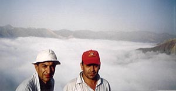
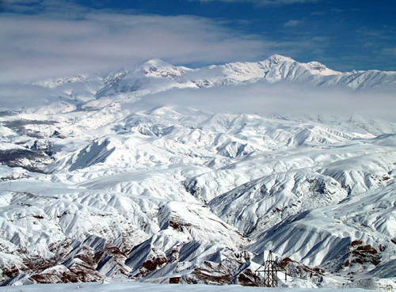
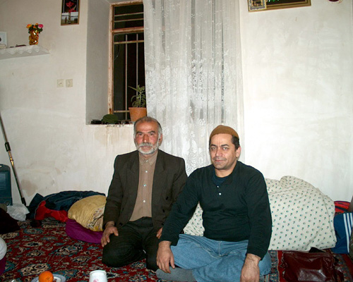

This is a friend from the days I was a consultant with Negareh
Computer Company. He is from Alamout area, known for its famous Ismailite
Assassins' citadel.
 This picture is from a trekking trip to Eshkevar from Alamout
 A beautiful picture
of the Alamout area in winter, taken by Mostafa Jahankhah.
 Mostafa, with
a villagers' hat, and a relative in the village of Garmaroud Bala.